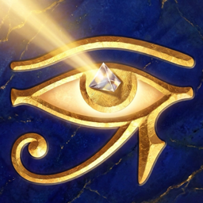

DESERT TOMBSA LIGHT PUZZLETo report a problem or ask a question, email apps.saleh@pm.me. It helps to mention your iPhone model and which chamber you were playing, or your room code if it happened in a race.
How do I place a piece?
Drag a piece from the tray onto an empty floor tile. Drag it again to move it, or back to the tray to take it off the board. The light follows your pieces as you move them.
How do I turn a mirror or crystal?
Tap it to flip its slant. Some pieces built into the chamber turn when tapped too.
When is a chamber solved?
When every eye in the room is lit by light of its colour at the same time.
What do the colours do?
Coloured glass lets only its own colour through. Where beams of different colours meet on an eye, they mix. A prism splits white light into red, green and blue, each leaving in its own direction.
What are the scarab coins?
Each chamber has three. A coin counts when your light is crossing it at the moment you solve the chamber. You can replay any solved chamber to find the ones you missed.
How do new chambers open?
Solving a chamber opens the next one.
How do I start a race?
Tap Play with Friends, then Create Room. Share the four-letter room code; friends tap Join and enter it. When everyone is in (2 to 6 players), the host taps Begin.
How does scoring work?
Everyone plays the same eight boards. The first player to light a board wins 3 points and ends that board for everyone. The last two boards are worth 6. If nobody lights a board within three minutes, nobody scores it.
What is the scarab in a race?
On two or three boards of each race, one scarab sits on a tile with glowing edges. The first player whose light touches it gets 1 extra point, even if someone else wins that board. Touching it once is enough; you can turn your light away again.
Can the race be paused?
The host can pause between and during boards. The board is hidden while paused, and the race carries on when the host resumes. If you’d rather not wait, you can leave.
I lost my connection. Can I get back in?
Yes. The game reconnects by itself for about two minutes. If you close the app, open it again and choose Rejoin.
Why was my username refused?
Usernames use English letters and numbers only, up to 16 characters. You can set one in Settings so you aren’t asked each time.
Do I need an internet connection?
Only for racing with friends. The chambers and Practice with Bots play offline.
Can I turn off the music or sounds?
Use the music and speaker buttons on the title screen.
Home · Privacy policy · © 2026 Abdullah Saleh